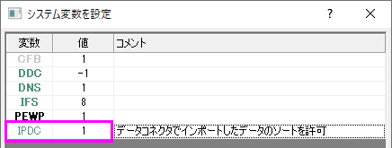

FAQ-1053 データコネクタを使用するときにデータの変更をしたい場合にはどうすればよいですか?
Change-Data-When-Connector-Used
最終更新日：2021/10/13
データコネクタによってインポートされたデータは、デフォルトで保護されています。
- Text/CSVそしてExcelコネクタからインポートされたデータは編集不可ですが、ソートは可能です。
- Text / CSVそしてExcel以外のコネクタでインポートされたデータは、編集もソートも不可です。
データコネクタによってインポートされたデータを自由に編集または並べ替え
データ保護が必要ない場合は、データをインポートする前にLabTalkシステム変数 @IPDCの値を変更することで、データ編集や並べ替えの制限を回避できます。
- 環境設定: システム変数を選択します。
- システム変数を設定ダイアログの変数列に"IPDC」を入力します。値には "0" を入力します。
- データコネクタでデータをインポートします。
 | 現在のセッションのみすべての制限を削除する場合は、ウィンドウ:スクリプトウィンドウをクリックし、次のように入力して、Enterキーを押します。
@IPDC=0
|
インポート済みのコネクタデータの編集操作を管理
コネクタを介してインポートされたデータを変更するには、コネクタアイコン をクリックして、次のいずれかを選択します。
をクリックして、次のいずれかを選択します。
- インポートしたデータのロック解除：コネクタアイコンをクリックしてインポートを選択するまで、データはロック解除されたままになります（インポートすると、データが上書きされ、編集保護が復元されます）。
- シートを接続しない:ワークシート/行列とデータソース間の接続を解除します。また、編集保護も解除します。コネクタアイコンはそのままで、データソースに再接続できます（その時点で、データは上書きされ、編集保護が復元されます）。
- データコネクタを削除:アクティブブックのすべてのシートからデータコネクタを完全に削除します。全シートから編集保護を削除します。さらに、保存時にインポートデータを除外 チェックマークも外します。
コネクタデータの制限を微調整
保護を完全に削除せずに、コネクタデータの編集に関する制限を緩和するためのオプションがあります。 繰り返しになりますが、LabTalkシステム変数@IPDCの値を変更はデータをインポートする前に行う必要があります。
例えば、Texx/ CSV、Excel以外のコネクタを介してインポートされたデータのソートを許可し、編集はできないようにするには次のようにします。
- 環境設定: システム変数を選択します。
- システム変数を設定ダイアログの変数列に"IPDC」を入力します。値には "1" を入力します。
- 
- データコネクタでデータをインポートします。
キーワード:インポート、データの接続、CSV、TXT、DAT、Excel、コネクタ、列のソート、ワークシートのソート、データの整合性、データ保護、